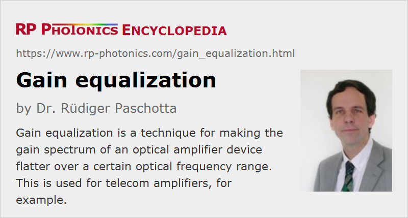

Gain Equalization
Definition: a technique for making the gain spectrum of an optical amplifier device flatter over a certain optical frequency range
Alternative term: gain flattening
How to cite the article; suggest additional literature
Author: Dr. Rüdiger Paschotta
The optical gain e.g. from a fiber amplifier has some dependence on the wavelength, which can be disturbing. For example, in optical fiber communications with wavelength division multiplexing, the wavelength dependence of the gain can unbalance the powers in the transmitted channels. Therefore, it is common to apply methods for gain equalization, also called gain flattening. There are various technological options:
- For a given kind of active fiber, the shape of the gain spectrum can be optimized by adjusting the average inversion level of the laser-active ions. This can be done e.g. by varying the pump power or the length of the active fiber.
- The material composition of the fiber core can be optimized. For example, silica fibers can be optimized with various codopants, and fluoride fibers can offer a fairly flat gain spectrum.
- Amplifier fibers of different glass compositions can be combined in an amplifier chain to obtain a wideband hybrid amplifier. Such a device may also contain a Raman amplifier.
- Another approach is a split-band amplifier, where a wavelength-dependent splitter distributes the signal content over two or more different fiber amplifiers, and another wavelength-dependent fiber coupler serves to recombine the spectral components.
- Optical filters (gain flattening filters) can be used, which have higher losses in wavelength regions where the gain is higher. Such filters are often based on fiber Bragg gratings (long-period gratings, slanted gratings or chirped gratings), although various other types of filters have been demonstrated.
The optimization of a multi-stage amplifier with flattening filters is a complex task, since it is not obvious, e.g., which combination of amplifiers and filters gives the best results in terms of noise figure and power efficiency. A typical solution for a two-stage amplifier based on doped silica fibers would include an optical filter between the two stages.
The gain spectrum of a Raman amplifier can be flattened by using multiple pump beams [7] with well-balanced pump power levels.
Suppliers
The RP Photonics Buyer's Guide contains 2 suppliers for gain equalization filters.
Questions and Comments from Users
Here you can submit questions and comments. As far as they get accepted by the author, they will appear above this paragraph together with the author’s answer. The author will decide on acceptance based on certain criteria. Essentially, the issue must be of sufficiently broad interest.
Please do not enter personal data here; we would otherwise delete it soon. (See also our privacy declaration.) If you wish to receive personal feedback or consultancy from the author, please contact him e.g. via e-mail.
By submitting the information, you give your consent to the potential publication of your inputs on our website according to our rules. (If you later retract your consent, we will delete those inputs.) As your inputs are first reviewed by the author, they may be published with some delay.
Bibliography
| [1] | K. Inoue et al., “Tunable gain-equalization using a Mach–Zehnder optical filter in multistage amplifiers”, IEEE Photon. Technol. Lett. 3, 718 (1991), doi:10.1109/68.84463 |
| [2] | S. F. Su et al., “Gain equalization in multiwavelength lightwave systems using acousto-optic tunable filters”, IEEE Photon. Technol. Lett. 4, 269 (1992), doi:10.1109/68.122389 |
| [3] | R. Kashyap et al., “Wavelength flattened saturated erbium amplifier using multiple side-tap Bragg gratings”, Electron. Lett. 29 (11), 1025 (1993), doi:10.1049/el:19930685 |
| [4] | B. Clesca et al., “1.5 μm fluoride-based fiber amplifiers for wideband multichannel transport networks”, Opt. Fiber Technol. 1, 135 (1995), doi:10.1006/ofte.1995.1004 |
| [5] | A. M. Vengsarkar et al., “Long-period fiber-grating-based gain equalizers”, Opt. Lett. 21 (5), 336 (1996), doi:10.1364/OL.21.000336 |
| [6] | N. Park et al., “High-power Er–Yb-doped fiber amplifier with multichannel gain flatness within 0.2 dB over 14 nm”, IEEE Photon. Technol. Lett. 8, 1148 (1996), doi:10.1109/68.531818 |
| [7] | Y. Emori et al., “100 nm bandwidth flat-gain Raman amplifiers pumped and gain-equalized by 12-wavelength-channel WDM laser diode unit”, Electron. Lett. 35, 1355 (1999), doi:10.1109/OFC.1999.766052 |
| [8] | M. Harurnoto et al., “Gain-flattening filter using long-period fiber gratings”, J. Lightwave Technol. 20 (6), 1027 (2002), doi:10.1109/JLT.2002.1018814 |
| [9] | Ik-Bu Sohn et al., “Gain flattened and improved EDFA using microbending long-period fibre gratings”, Electron. Lett. 38 (22), 1324 (2002), doi:10.1049/el:20020915 |
See also: gain, fiber amplifiers, tunable optical filters, wavelength division multiplexing
and other articles in the category optical amplifiers
|  |
If you like this page, please share the link with your friends and colleagues, e.g. via social media:
These sharing buttons are implemented in a privacy-friendly way!